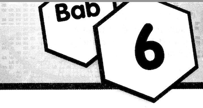
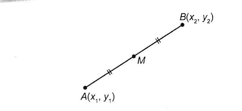

Geometri Koordinat
Coordinate Geometry
6.1
Jarak di antara Dua Titik
Distance between Two Points
Nota Imbasan

AB = √[(x₂ - x₁)² + (y₂ - y₁)²]
1.
Cari jarak di antara setiap pasangan titik yang berikut.
Find the distance between each of the following pairs of points.
CONTOH
A(-1, 5), B(4, -7)
Penyelesaian:
AB = √[(x₂ - x₁)² + (y₂ - y₁)²]
= √[(-1 - 4)² + [5 - (-7)]²]
= √[(-5)² + 12²]
= √169
= 13 unit
(a) P(2, -3), Q(-4, 5)
(b) R(-2, 1), S(3, 13)
(c) T(1, 8), U(4, -2)
BAB
6